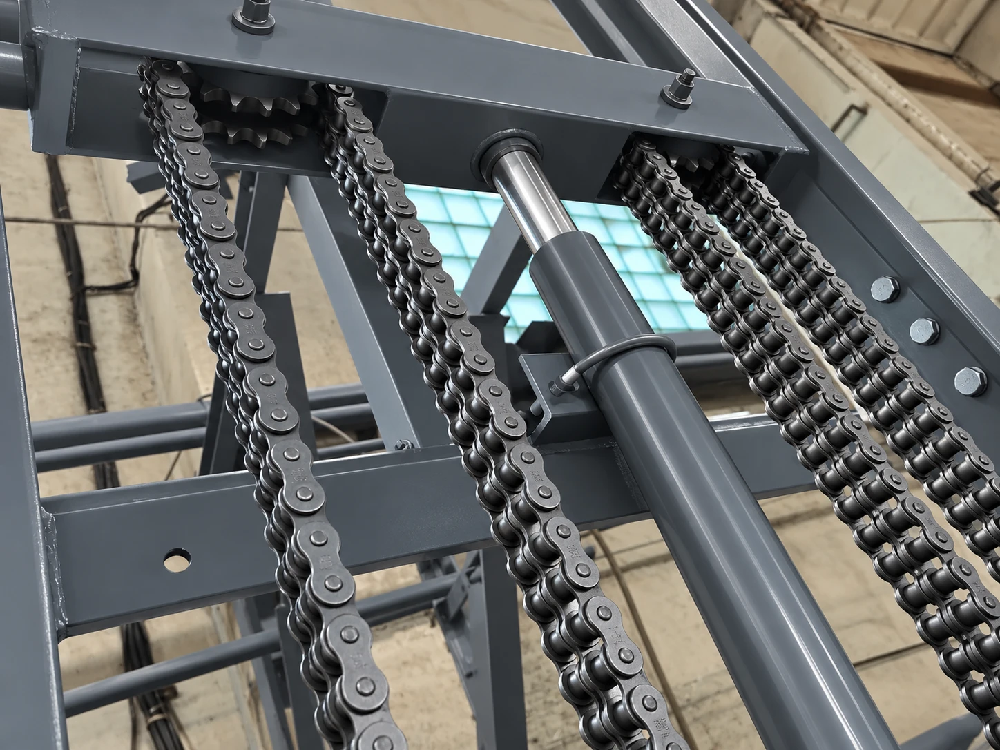

На красной сцене, как первые экраны сайта. Белая линия зачёркивает то, что ставят другие, на смену поднимается наш вариант.
Подъёмник держится на цепях: от них зависят ресурс и безопасность. Поэтому мы не экономим там, где экономят другие.
Лист чертежа: звёздочка проявляется, цепь ложится на неё по звену. Потом цепь продолжает бежать по звёздочке, пока блок на экране.